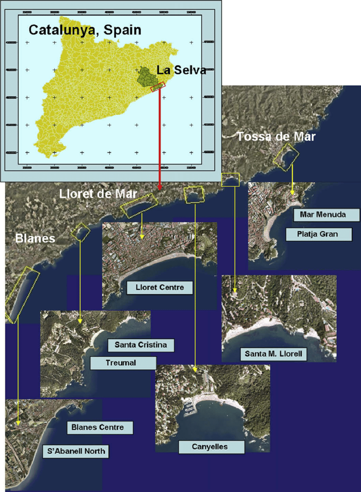

Air Beach to Beach
The art of seeing not served markets and modeling businesses for them

Like a mix of Airbnb and Uber, this tech-enabled idea is about beaches, cars, airlines, and hotels. it is also an idea that will be emulated into this business operation management game that will be about the airline industry. This map below tells a bit about this tech-enabled idea that could be called airB2B but B2B already means a lot for business people then maybe it is better to find another name for it or this could be a good name if business people are the core customers of this tech-enabled business model. This tech-enabled idea relies on airline operations and targets travelers but is not about business travelers but rather about leisure travelers. I have another tech-enabled idea that deals with business travelers which makes one of the most profitable segments of the air industry that airliners fight to keep and nurture because they are big spenders and there are those for which airliners have designed frequent flyer programs in order to make them stick to their services. I will probably write and publish about this tech-enabled idea about business travelers but here it is about leisure travelers and also about beaches as you can see in the picture above.

I have spent some time gathering the minimum available data that could give some simple proof of the existence of these markets that could be aggregated by using the power of technology for connecting things and making them work in sync.
By being curious and searching to know more about what is interesting to us we almost always learn something interesting about another field because I would never know that sand availability was an important metric to take into account but now I do because this metric will impact the demand level for this tech-enabled transportation system.
There is this dataset to build as I said in this article titled DataScience for the airline industry. I hope that I will benefit from the fact that this tech-enabled idea shares the same data with this business operations management game what could let me achieve two with one. I think that month ago I sat down and tried to make a plan that would allow me to find the shared resources of the tech-enabled ideas that I had at that time and this is a process that I frequently do because it helps to find those pieces of ideas that should be prioritized and executed first because they have multiple outputs touching multiple tech-enabled ideas and pushing them forward. That’s a process that I highly recommend you, to sometimes stop and see what the things you are working on or interested in having in common and see how it could help you gain time, resources, and speed.
At the edges of an established business model, you could implement a tech-enabled business model. This one I am trying to describe in this article exploits this new but old paradigm of business modeling and market positioning. I said old because this is like what is described by the theory of the innovator dilemma. I confess that I am still in the dilemma and not still an innovator but still a student of the market.